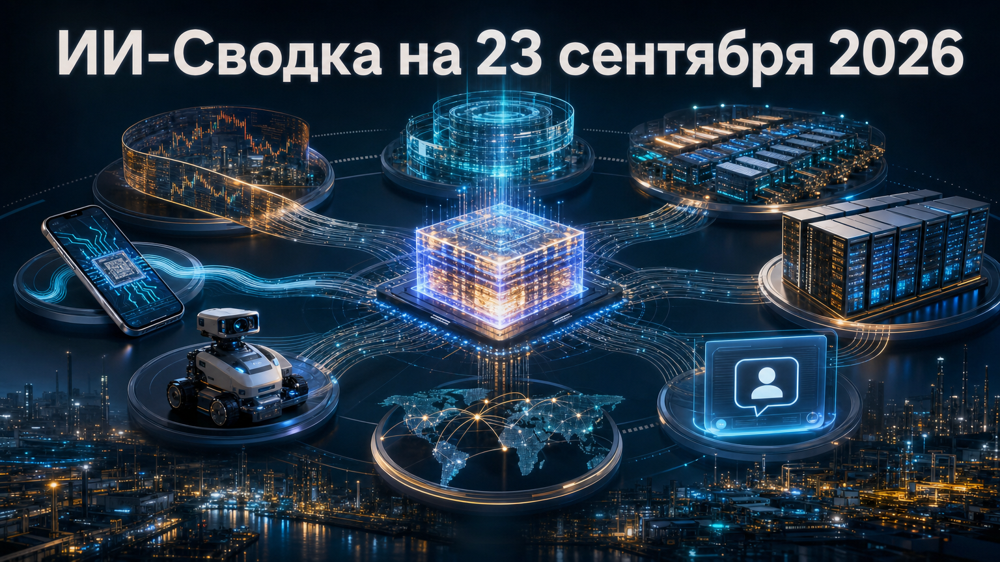

День принёс сразу два крупных модельных релиза: OpenAI расширила линейку GPT-6, а Anthropic выпустила Claude Opus 5.5. Одновременно инфраструктурный рынок показывает, что масштаб ИИ всё сильнее зависит от долгосрочных контрактов на вычисления, стоимости inference и способности запускать модели вне облака — на смартфонах и робототехнических платформах.
В российской части выпуска — интеграция корпоративных агентов Яндекса в популярные мессенджеры. Это ещё один сигнал, что агентные сценарии постепенно перемещаются из отдельных интерфейсов в привычные рабочие каналы.
OpenAI обновила механизм prompt caching для семейства GPT-6. Компания заявила о более высоких cache hit rates для повторяемых префиксов запросов, скидках на повторное использование контекста в 30-минутном окне, а также о dashboard и диагностике причин cache misses. Разработчики также получили explicit cache breakpoints и prewarming.
Практический смысл обновления — снижение задержки и стоимости долгих агентных сценариев, где система многократно использует инструкции, историю работы и большой общий контекст. Это продуктовый анонс OpenAI: заявленный эффект требует проверки в реальных нагрузках, но сама логика важна для команд, строящих persistent-агентов через API. Better prompt caching for GPT-6
SoftBank, по данным The Next Web, запустила размещение примерно $11 млрд высокодоходных облигаций: около $10 млрд в долларовых бумагах и €1 млрд в еврооблигациях. Средства связывают с очередным платежом в $10 млрд в рамках ранее объявленного обязательства инвестировать в OpenAI $30 млрд, а также с рефинансированием bridge loan.
История показывает, насколько капиталоёмким становится финансирование ведущих ИИ-лабораторий: инвестор опирается не только на собственный капитал, но и на долговой рынок. Детали назначения средств основаны на сообщениях о term sheets и могут уточняться по мере закрытия размещения. SoftBank is reportedly raising about $11bn in bonds to cover its next OpenAI payment
Британский neocloud-провайдер Nscale раскрыла в документах для IPO более $103 млрд контрактов на ИИ-вычисления. По данным TechCrunch, около 85% обязательств связаны с двумя заказчиками — Microsoft и Anthropic: соглашения оцениваются соответственно в $43,8 млрд и $44,6 млрд.
Раскрытие одновременно демонстрирует спрос на вычисления и концентрационный риск нового инфраструктурного рынка. В частности, соглашение с Anthropic зависит от привлечения Nscale финансирования и выполнения milestones, поэтому номинальный объём договоров нельзя приравнивать к уже полученной выручке. За первое полугодие компания сообщила о выручке $140,6 млн и чистом убытке $1,02 млрд. Nscale’s IPO will test Wall Street’s appetite for concentrated AI bets once again
Anthropic выпустила Claude Opus 5.5 и позиционирует его как новый наиболее мощный уровень Claude для программирования и сложной интеллектуальной работы. По данным TechCrunch, цена output-токенов снижена с $25 до $20 за миллион, а компания заявляет преимущество модели над Fable по ряду бенчмарков и отдельных задач.
Для чувствительных bio- и cyber-сценариев к модели применяются safeguards, ограничивающие часть запросов, связанных с поиском эксплойтов и разработкой биологического оружия. Показатели возможностей и сравнения с другими моделями остаются заявлениями Anthropic, однако сочетание более низкой цены и ограничений для опасных возможностей становится важной частью конкуренции frontier-моделей. Anthropic releases Opus 5.5 with lower prices and Fable-level performance
OpenAI расширила линейку GPT-6 моделями Sol и Luna. Sol предназначена для более сложных задач, включая coding, тогда как Luna рассчитана на массовые задачи с понятной целью. Модели доступны в ChatGPT Work, Codex и API; Luna также должна появиться в desktop-приложении и на тарифах Free и Go.
Компания заявляет, что API-цена новых моделей вдвое ниже, чем у соответствующих моделей серии 5.6, связывая это с улучшениями inference и кэширования. Независимых тестов качества и экономии в источнике нет, но релиз усиливает давление на рынок: цена исполнения всё чаще становится сопоставимым с качеством параметром выбора модели. OpenAI launches GPT-6 Sol and Luna, boasting lower cost and fewer mistakes
Qualcomm анонсировала флагманские мобильные процессоры Snapdragon 8 Elite Gen 6 и Snapdragon 8 Elite Extreme Gen 6. Компания заявляет, что sensing hub может запускать модели до 200 млн параметров и поддерживать локального персонального помощника с памятью и распознаванием спикеров.
Версия Extreme, по заявлению Qualcomm, способна запускать локальную 30B mixture-of-experts модель. Если эти характеристики подтвердятся в серийных устройствах, часть агентных и голосовых сценариев сможет исполняться без постоянной передачи чувствительных данных в облако; пока это прежде всего заявления производителя, а не результаты независимых тестов смартфонов. Qualcomm launches two new smartphone chips with emphasis on AI
NVIDIA представила Isaac ROS 5.0 — обновление набора инструментов для робототехники на базе Robot Operating System. Компания сообщает, что релиз добавляет возможности агентов ИИ в экосистему ROS, расширяет открытые библиотеки для physical AI и развёртывание на платформе Jetson.
Значение релиза — в сближении привычного робототехнического стека с агентной логикой и моделями восприятия. Это официальный анонс NVIDIA, поэтому заявленные возможности и практическая зрелость конкретных компонентов ещё предстоит оценить разработчикам на реальных роботах и в сценариях с требованиями к безопасности. NVIDIA Isaac ROS 5.0 Advances Agentic, Open Source Robotics Development
Yandex B2B Tech сообщила об интеграции агентов ИИ в Telegram и MAX. Анонс размещён на официальной странице Яндекса и указывает на перенос агентных корпоративных сценариев в мессенджеры, которыми сотрудники уже пользуются для коммуникаций и рабочих запросов.
Для бизнеса такой подход может сократить барьер входа: взаимодействие с агентом происходит не в отдельной новой системе, а в привычном канале. При этом в доступном материале не раскрыты технические детали, перечень функций, модели доступа к корпоративным данным и параметры безопасности, поэтому масштаб практической доступности следует оценивать осторожно. 22 сентября 2026Yandex B2B Tech интегрировала ИИ-агентов в Telegram и MAX